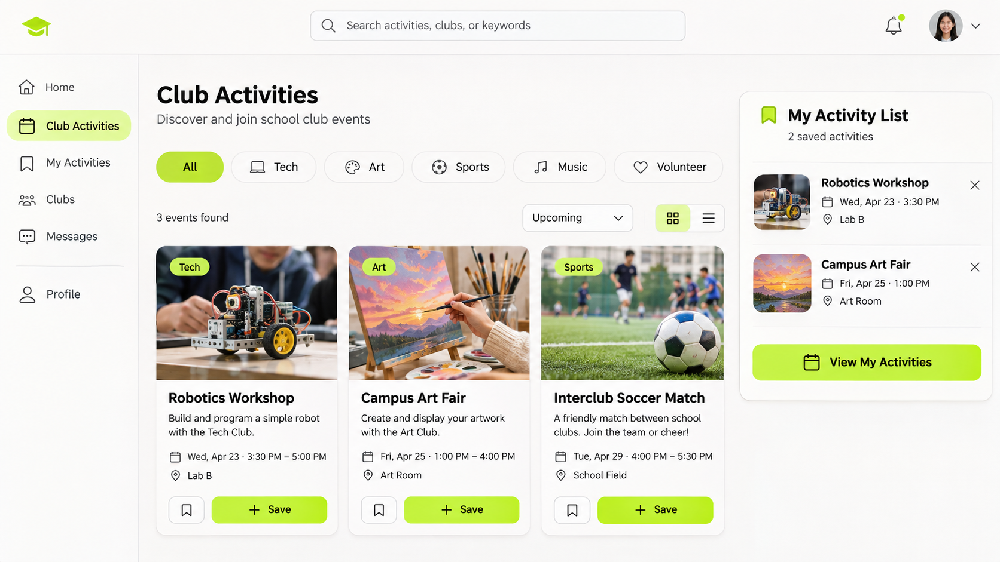

明确用户与需求
把同学的使用场景拆成可实现的功能，并选出最重要的部分。
固定挑战：为校园社团设计活动管理工具，让同学查看活动、筛选感兴趣的项目，并生成自己的活动清单。
查看活动卡片、按类别筛选、添加到个人活动清单。

学校社团、运动俱乐部或志愿活动都可能遇到信息分散的问题。这个原型能展示一种解决思路，也可继续发展成个人项目。
列出活动、按类别筛选并生成个人清单；用预置示例活动，完成一次同学试玩与修改。
基础版使用示例数据，不含真实账号、报名提交或数据库；四小时内完成情况需试课验证。
校园社团活动常分散在不同通知中。同学可能不知道有什么活动，组织者也难以让信息被看见。学生将从这个固定问题出发，设计一条更清楚的活动浏览路径。
用示例数据向同学演示：查看活动、按兴趣筛选、加入个人清单；邀请同学指出找不到的信息，再改进界面。
基础版是可演示的浏览器原型；不包含真实账号、消息、在线报名或数据库。
学生负责关键判断，用 AI 帮忙制作、测试与修改。
把同学的使用场景拆成可实现的功能，并选出最重要的部分。
用 AI 协助生成代码，运行、排查问题并改进交互。
邀请同学试用，观察卡点，修改至少一个问题。
0:00–1:00 理解挑战与开始制作 / 1:00–1:10 休息 / 1:10–2:00 制作 / 2:00–2:20 休息 / 2:20–3:05 测试与改进 / 3:05–3:15 休息 / 3:15–4:00 展示与反馈
把这次的方法用到你关心的领域。